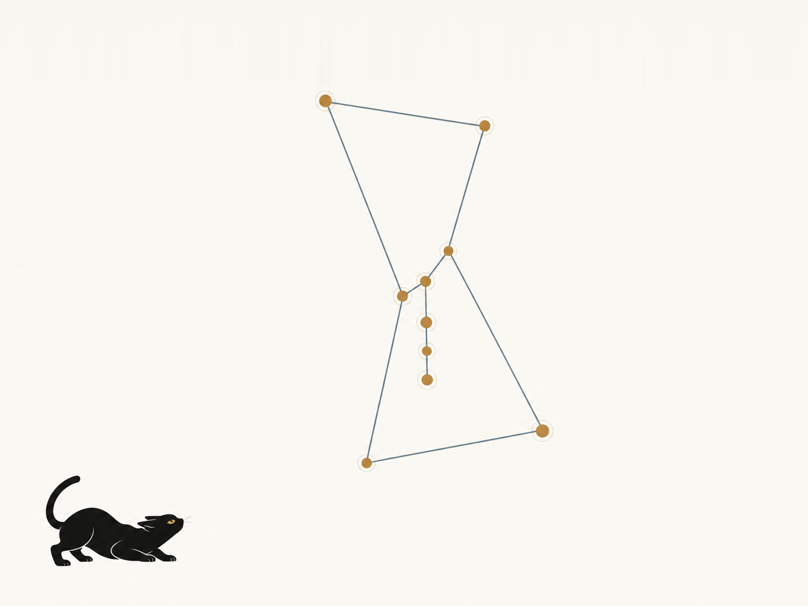

Estimating galaxy cluster masses
Learn cluster masses from X-ray observations and explore interpretation schemes to identify which regions of the cluster are most informative.
Research source ↗RESEARCH
Machine learning can help us harness cosmological correlations we would miss by hand. The scientific question is whether those relationships teach us something about the Universe—or only about the training data.
My research develops and tests methods for learning from galaxy clusters and large-scale structure. Understanding how a model works, and where it stops working, is part of the science.
Go straight to the papers ↓
Learn cluster masses from X-ray observations and explore interpretation schemes to identify which regions of the cluster are most informative.
Research source ↗Examine what a model learns and use that representation to study self-calibration in cluster cosmology.
Research source ↗Evaluate deep learning against traditional 2-point statistics for cosmological inference.
Research source ↗Delgado, Ntampaka, and collaborators
Cluster structureNtampaka and collaborators; public preprint
Trustworthy MLSoltis, Ntampaka, and collaborators
Cluster structureHsu and collaborators
Cluster structureSadikov and collaborators
Cluster structureFu and collaborators
Survey scienceWu and collaborators
Trustworthy MLChadayammuri, Ntampaka, and collaborators
Survey scienceHo, Soltis, Farahi, Nagai, Evrard, and Ntampaka
Trustworthy MLNtampaka and Vikhlinin
Trustworthy MLSoltis, Ntampaka, and collaborators
Survey scienceHo, Ntampaka, and collaborators
Masses and cosmologyNtampaka, Eisenstein, Yuan, and Garrison
Masses and cosmologyVillar and collaborators
Survey scienceNtampaka and collaborators
Masses and cosmologyGreen, Ntampaka, and collaborators
Masses and cosmologyNtampaka, Rines, and Trac
Masses and cosmologyLa Plante and Ntampaka
Masses and cosmologyNtampaka, Trac, Cisewski, and Price
Masses and cosmologyNtampaka and collaborators
Masses and cosmologyNtampaka and collaborators
Masses and cosmologyXu, Ho, Trac, Schneider, Poczos, and Ntampaka
Survey scienceNo papers match that search.